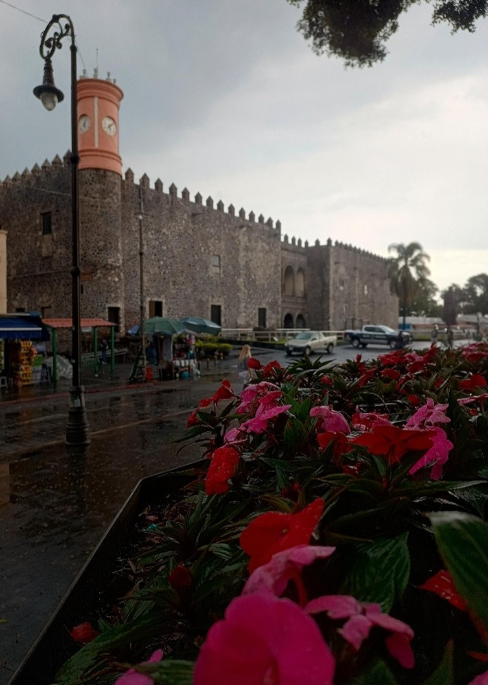

MUNICIPIOS DE MORELOS

Cuernavaca
Conocida como la "Ciudad de la Eterna Primavera", Cuernavaca es la capital de Morelos y destaca por su clima agradable, historia prehispánica y arquitectura colonial.

Jiutepec
Jiutepec es un municipio con fuerte crecimiento industrial y urbano, conocido por su cercanía con Cuernavaca y su desarrollo económico.

Temixco
Temixco es famoso por sus balnearios y parques acuáticos, siendo un destino turístico importante dentro del estado de Morelos.

Emiliano Zapata
Este municipio lleva el nombre del líder revolucionario y ha tenido un crecimiento urbano importante en los últimos años.

Xochitepec
Xochitepec es conocido por su tranquilidad y espacios naturales, además de ser sede de eventos y centros turísticos importantes.